Capítulo 6 Análisis Exploratorio Básico
Este capítulo describe el comportamiento del costo unitario de producción a partir de las 395 órdenes que sobrevivieron al proceso de depuración del Capítulo 5. La premisa de entrada tratar el dataset como un universo homogéneo del proceso productivo y observar qué dice cuando se le aplica la teoria estándar del análisis exploratorio (resúmenes descriptivos, distribuciones univariadas, correlaciones, y comparaciones bivariadas marginales). A lo largo del recorrido, la data va a revelar que no es uniforme, que mezcla modelos operativos distintos, y que las comparaciones agregadas pueden ser engañosas. El cierre del capítulo muestra decisiones metodológicas concretas que dan paso al análisis estratificado del Capítulo 7.
Este capítulo responde una pregunta básica de control de gestión: ¿qué tan predecible es el costo unitario que vemos en los reportes? La respuesta corta es que el promedio del sistema oculta más de lo que muestra.
6.1 Carga del dataset analítico
Se parte del dataset depurado en el capítulo de metodología (395 órdenes de producción con tipos ajustados). La limpieza previa ya eliminó errores de digitación y validó la integridad de los registros; este capítulo se concentra en entender qué dicen esos datos.
El dataset contiene 395 órdenes de producción y 17 variables.
6.2 Análisis univariado de variables respuesta
Las tres variables respuesta del estudio son costo_transformacion (costo de conversión por unidad producida), costo_insumo (costo de materias primas por unidad producida) y su agregado costo_unitario_total. Se analizan en paralelo porque responden a lógicas operativas distintas: el costo de transformación mide la eficiencia del proceso productivo (mano de obra, energía, depreciación, indirectos por unidad), mientras que el costo de insumo refleja decisiones de formulación y consumo de materias primas.
Analizar las tres en paralelo permite separar responsabilidades y esfuerzos de gestión y que pueden tener dinámicas independientes.
6.2.1 Costo unitario de conversión o de transformacion
| n | media | ds | 50% | minimo | maximo | Q1 | Q3 | IQR |
|---|---|---|---|---|---|---|---|---|
| 395 | 29.93986 | 15.25873 | 29.0901 | 2.76611 | 97.1848 | 21.90816 | 36.44523 | 14.53708 |
Se obtuvo un costo medio de conversión por unidad de 29.94 UM/unidad (DS = 15.26 UM/unidad), con un coeficiente de variación de 51%. El 50% de las órdenes presenta un costo de conversión por debajo de 29.09 UM/unidad. La desviación estándar alcanza 15.26, lo que equivale a un coeficiente de variación de 51%. Quiere decir que los costos fluctúan de manera importante respecto al promedio. El rango intercuartílico (14.54) confirma que el 50% central de las órdenes opera entre 21.91 y 36.45 UM/unidad, un rango operativo razonablemente delimitado. Pero los extremos cuentan otra historia: el mínimo de 2.77 está muy alejado del Q1 (21.91), y el máximo de 97.18 multiplica por más de tres el Q3 (36.45). Esta asimetría sugiere que la distribución no es simétrica y que puede haber fenómenos estructurales distintos en los extremos.
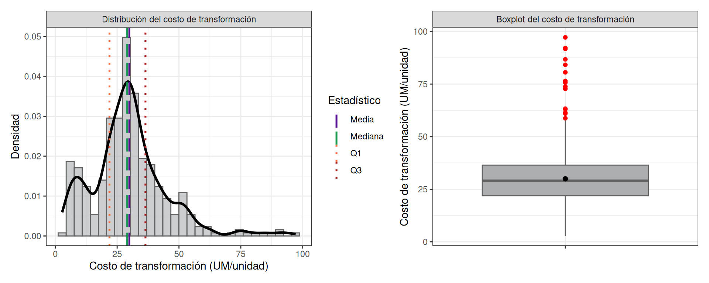
El histograma con la curva de densidad confirma esta lectura. La masa principal de la distribución se concentra entre el IQR, pero aparece un leve segundo abultamiento que rompe el patrón unimodal esperado. Este es una señal de una distribución bimodal que habitualmente indica que los datos provienen de dos procesos generadores distintos mezclados, no de un único proceso con ruido aleatorio.
Cuando un histograma muestra patron bimodal, el promedio numérico describe un punto que no corresponde realmente a ningún proceso real: queda entre los dos modos. Es el equivalente a calcular la “talla promedio” de una población donde conviven niños y adultos. El número existe, pero no representa a nadie.
El boxplot complementa la lectura mostrando outliers altos, que no son uno o dos casos puntuales, sino un grupo visible de órdenes con costos superiores. La cola inferior, en cambio, no presenta datos atipicos relevantes. Sugiere que el proceso tiene una capacidad limitada de bajar costos por debajo de cierto umbral, pero una capacidad considerable de superarlos hacia arriba bajo ciertas condiciones.
- El costo presenta volatilidad alta (CV = 51%) que cuestiona la utilidad operativa del promedio simple.
- La distribución es asimétrica con bimodalidad incipiente con lo cual parece mezclar al menos dos modelos operativos distintos.
- Los outliers superiores forman una subpoblación, no anomalías aisladas. Requieren tratamiento específico, no exclusión.
6.2.2 Costo unitario de los insumos
| n | media | ds | 50% | minimo | maximo | Q1 | Q3 | IQR |
|---|---|---|---|---|---|---|---|---|
| 395 | 5.048482 | 4.419278 | 4.184607 | 0.0136519 | 46.21884 | 2.427897 | 6.211323 | 3.783426 |
El costo de insumo promedio es de 5.05 UM/unidad, sustancialmente menor que el de transformación. Lo notable es su coeficiente de variación: 87.5%, una variabilidad relativa muy superior a la del componente de transformación (51%). En insumos, la dispersión es casi tan grande como el propio promedio. La distribución es marcadamente asimétrica positiva. La mediana (4.18) está claramente por debajo de la media (5.05), lo que confirma la influencia de valores altos en la cola derecha. El máximo (46.22) es nueve veces el Q3 (6.21), un ratio que revela la presencia de pocas órdenes con consumos de insumo desproporcionadamente costosos. Operativamente, un grupo dominante de insumos con costo bajo y una cola de insumos puntualmente costosos. ¿esos insumos caros corresponden a productos premium con precio diferenciado, o están subsidiados por la mezcla?
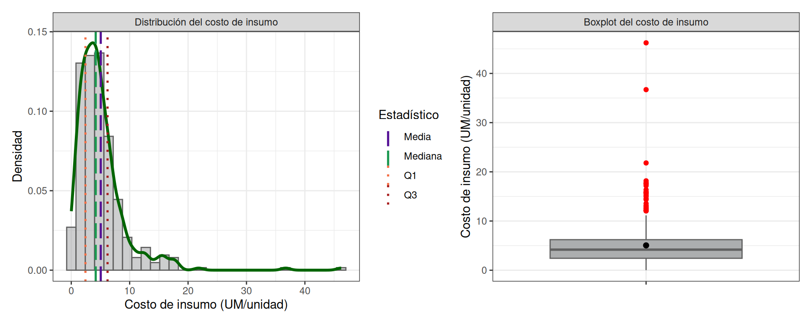
- Volatilidad relativa muy alta (CV = 87.5%), superior a la del componente de transformación.
- Mayoría de insumos baratos, minoría puntualmente cara.
6.2.3 Costo unitario total
La variable costo_unitario_total se deriva como la suma de costo_transformacion y costo_insumo, y representa el costo total por unidad de producto.
| n | media | ds | 50% | minimo | maximo | Q1 | Q3 | IQR |
|---|---|---|---|---|---|---|---|---|
| 395 | 34.98835 | 17.28567 | 33.63643 | 4.301429 | 111.7165 | 25.60903 | 41.68937 | 16.08034 |
El costo unitario total promedio es de 34.99 UM/unidad con CV del 49.4%, moderadamente más estable que sus componentes individuales considerados por separado. La descomposición es reveladora: • Transformación: 85.6% del costo total promedio. • Insumos: 14.4% del costo total promedio. Cualquier estrategia de reducción de costos enfocada exclusivamente en insumos tiene un techo del 14% sobre el costo unitario. La palanca real está en la transformación.
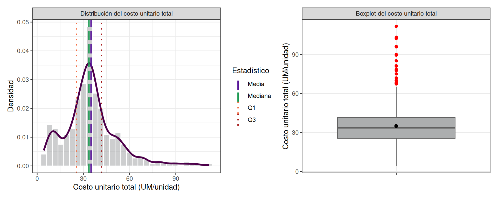
El boxplot del costo total hereda los outliers superiores que ya aparecían en transformación e insumos individualmente. La presencia simultánea de cola larga en ambos componentes los amplifica al agregarlos. El costo unitario total opera mayoritariamente en un rango estable (Q1 a Q3: 25.6 a 41.7), pero está condicionado por una fracción de órdenes que estructuralmente, no por azar, incurre en costos significativamente más altos.
- La transformación domina la estructura de costos (85.6%): cualquier programa de mejora debe priorizarla sobre insumos.
- La asimetría se hereda y amplifica al agregar componentes: el promedio total subestima la cola alta.
- La fracción de órdenes con costo elevado no es ruido aleatorio; es una característica estructural del sistema que merece análisis específico.
6.3 Análisis univariado de predictoras numéricas
Tras revisar las variables respuesta surge la pregunta ¿qué características operativas explican esa variabilidad? Las cuatro predictoras numéricas describen tres dimensiones del proceso productivo: escala (volumen), intensidad temporal (duración) y consumo material (cantidades de insumo).
| variable | n | media | ds | 50% | minimo | maximo | Q1 | Q3 | IQR |
|---|---|---|---|---|---|---|---|---|---|
| volumen_lote | 395 | 2739.03 | 2346.76 | 1989 | 100.00 | 13300 | 1226.00 | 3289 | 2063.00 |
| duracion_proceso | 395 | 115.79 | 82.59 | 100 | 3.00 | 482 | 60.00 | 150 | 90.00 |
| cantidad_insumo_1 | 395 | 2.29 | 1.90 | 2 | 0.05 | 14 | 1.00 | 3 | 2.00 |
| cantidad_insumo_2 | 124 | 1.43 | 1.08 | 1 | 0.05 | 7 | 0.75 | 2 | 1.25 |
Volumen de lote. Es la variable más heterogénea. La media (2739) supera ampliamente a la mediana (1989), señal de asimetría positiva pronunciada. El rango va de 100 a 13300 unidades —un factor de 133×—. El IQR de 2063 unidades indica que incluso el comportamiento “típico” presenta dispersión muy alta. Esta heterogeneidad refleja la naturaleza make-to-order del proceso donde cada orden responde a un pedido específico y no existe un tamaño estándar dominante. La consecuencia analítica que el sistema no tiene reglas operativas uniformes y requiere segmentación por escala de producción.
Duración del proceso. Heterogénea pero más controlada. La media (115.8) horas, está moderadamente por encima de la mediana (100) horas, nuevamente con cola derecha. El IQR (60 a 150 horas) define un rango operativo razonablemente delimitado. El máximo de 482 horas señala procesos excepcionalmente largos que merecerían revisión específica.
Cantidad de insumo 1. Comportamiento mucho más concentrado. La mediana de 2 kilos y el IQR de 2 indican que la mayoría de las órdenes utiliza entre 1 y 3 kilos. La media (2.3) ligeramente superior a la mediana sugiere algunos valores altos sin dispersión extrema. Esta variable refleja un consumo relativamente estable y predecible, es positivo.
Cantidad de insumo 2. Solo aparece en 124 órdenes (las que tienen num_insumos = 2). La mediana de 1 y el IQR de 1.2 muestran una concentración aún mayor. El máximo de 7 es modesto frente al de insumo 1. Funciona como componente opcional o complementario, con consumo bajo y controlado.
La principal fuente de heterogeneidad del sistema productivo no está en los insumos —que son estables— sino en la escala de los lotes y la duración de los procesos. Esto tiene una implicación directa para la modelación posterior: cualquier modelo o iniciativa de mejora que ignore volumen y duración va a estar mal especificado y producirá conclusiones engañosas.

- La heterogeneidad del costo proviene principalmente de volumen y duración, no del consumo de insumos.
- El volumen de lote varía 133× entre el mínimo y el máximo: la naturaleza make-to-order impide pensar en un proceso estándar.
- Los insumos están bajo control: el problema no son los materiales sino cómo y cuánto se produce.

6.4 Análisis univariado de predictoras categóricas
La distribución de frecuencias de las siete variables categóricas deja ver, desde el inicio, que el sistema no está repartido de manera uniforme. Por el contrario, se concentra en pocas categorías dominantes, mientras que el resto aparece con baja frecuencia.
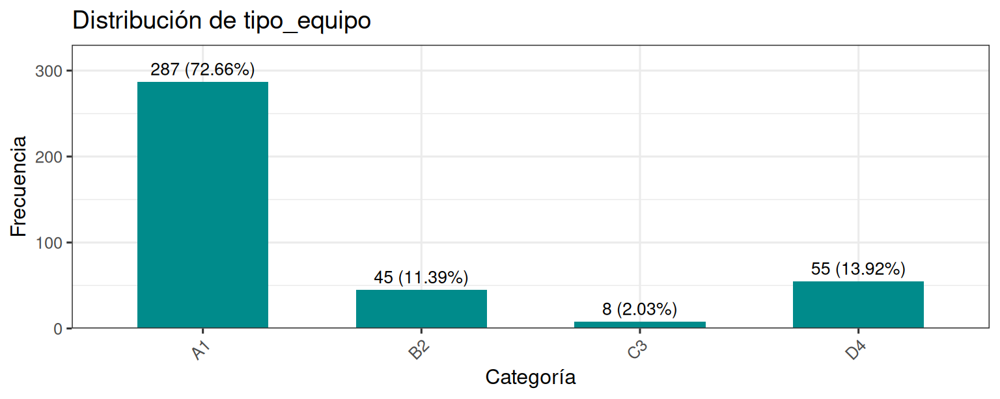
Tipo de equipo. A1 concentra el 72.7% de todas las órdenes. Esto es un dato con consecuencias profundas: cualquier estadístico global del sistema está dominado por A1. Cuando un reporte ejecutivo habla de “el costo promedio del sistema”, en realidad está hablando, en casi tres cuartos, del costo promedio de A1. Las categorías B2 (11.4%), D4 (13.9%) y especialmente C3 (2.0%) tienen una representación mucho menor. C3 con apenas 8 órdenes está estadísticamente al borde de la inutilidad para inferencia.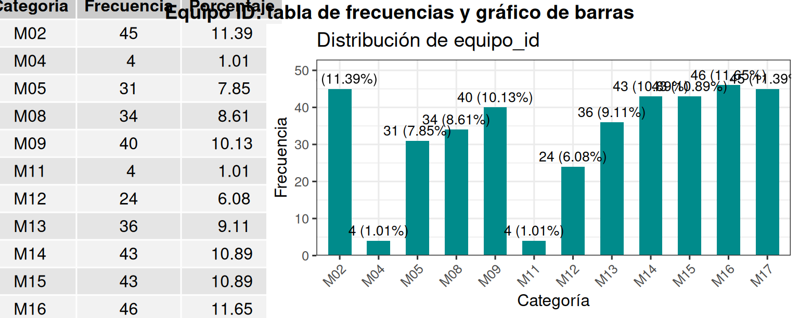
Equipo individual. Los 12 equipos tienen frecuencias entre el 1% y el 12%. M04 y M11 (los dos equipos C3) tienen 4 órdenes cada uno. Los equipos A1 están relativamente equilibrados entre sí (entre 8% y 12% cada uno). Los D4 (M05, M12) tienen 31 y 24 órdenes respectivamente.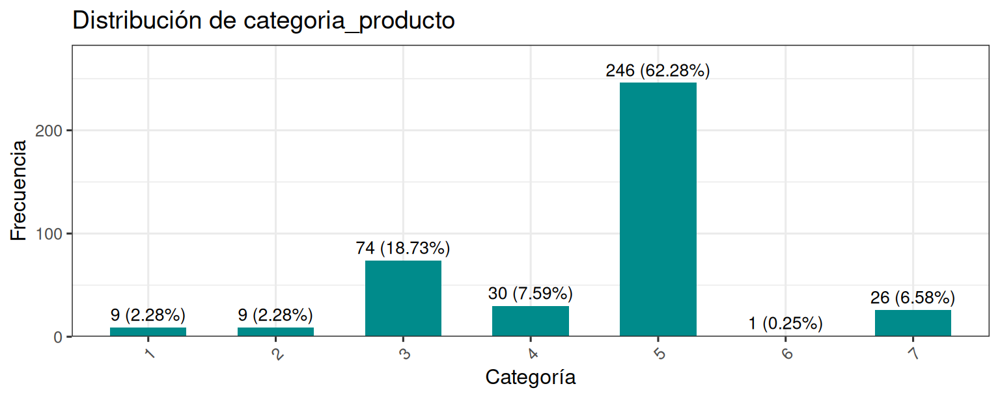
Categoría de producto. La categoría 5 absorbe el 62% de la producción. La categoría 6 tiene una sola orden. Este desequilibrio impone limitaciones al análisis: no hay base muestral para hacer comparaciones estables entre todas las categorías.
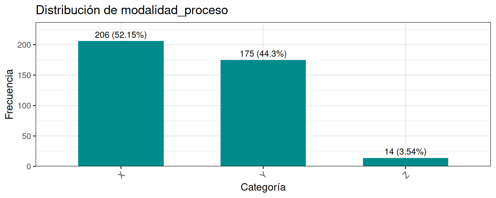
Modalidad de proceso. X y Y están razonablemente balanceadas (52% y 44%). Z es marginal (3.5%, 14 órdenes).
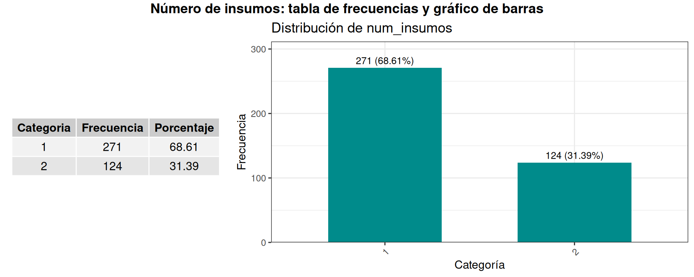
Número de insumos. Dos tercios de las órdenes operan con un solo insumo; un tercio con dos.
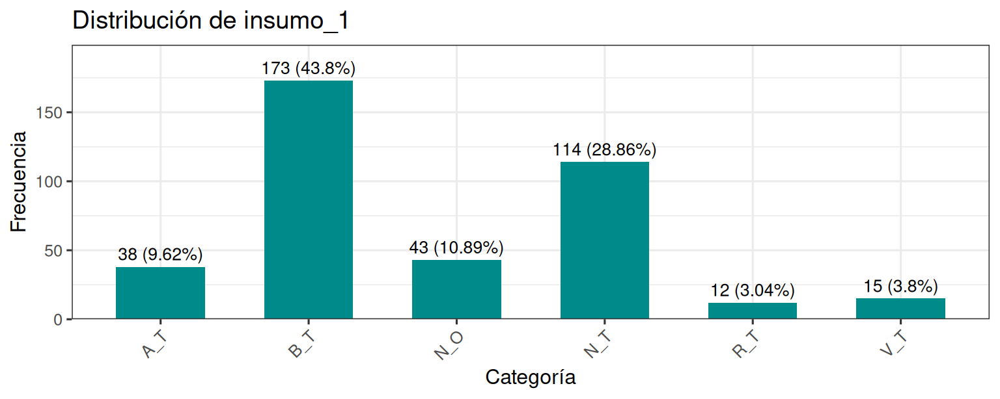
Insumos. Tanto en insumo_1 como en insumo_2, B_T y N_T son los más frecuentes. Hay insumos con presencia muy baja (R_T, V_T) que limitan la capacidad de análisis específico.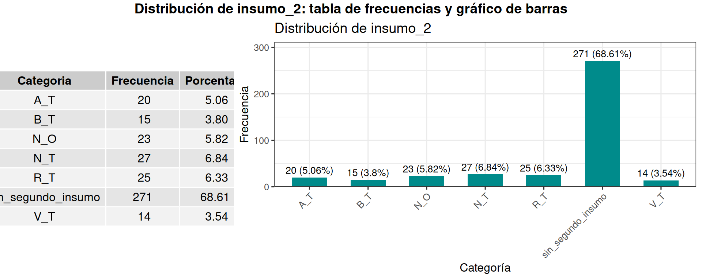
La fuerte concentración en A1 sugiere dos cosas: (i) cualquier modelo debe considerar tipo_equipo como variable explicativa central; (ii) las comparaciones entre categorías minoritarias serán inestables por bajo n. Esto anticipa que el análisis no podrá tratar a todos los grupos de la misma manera.
- A1 representa el 73% de las órdenes: el “costo del sistema” es mayoritariamente el “costo de A1”.
- C3 (8 órdenes) está al borde de la inutilidad estadística; cualquier conclusión sobre C3 será especulativa.
- Los desbalances en categorías de producto y en insumos minoritarios obligarán a agrupaciones o exclusiones en análisis posteriores.
6.5 Análisis bivariado
¿Cómo se relacionan las variables entre sí?. como punto de partida estándar, se presentan sin condicionar por subgrupos.
6.5.1 Correlacion Pearson
| costo_transformacion | costo_insumo | costo_unitario_total | volumen_lote | duracion_proceso | cantidad_insumo_1 | cantidad_insumo_2 | |
|---|---|---|---|---|---|---|---|
| costo_transformacion | 1 | 0.344 | 0.971 | -0.35 | 0.22 | -0.031 | 0.178 |
| costo_insumo | 0.344 | 1 | 0.56 | -0.294 | -0.087 | 0.134 | 0.213 |
| costo_unitario_total | 0.971 | 0.56 | 1 | -0.384 | 0.172 | 0.007 | 0.211 |
| volumen_lote | -0.35 | -0.294 | -0.384 | 1 | 0.662 | 0.607 | 0.093 |
| duracion_proceso | 0.22 | -0.087 | 0.172 | 0.662 | 1 | 0.67 | 0.339 |
| cantidad_insumo_1 | -0.031 | 0.134 | 0.007 | 0.607 | 0.67 | 1 | 0.367 |
| cantidad_insumo_2 | 0.178 | 0.213 | 0.211 | 0.093 | 0.339 | 0.367 | 1 |
Estructura interna del costo. La correlación entre costo_transformacion y costo_unitario_total es de (0.971) —prácticamente- perfecta—. Confirma numéricamente lo que la descomposición ya mostraba: el costo total es casi indistinguible del costo de transformación. La correlación con costo_insumo (0.56) es moderada y refleja su menor peso relativo.
Economías de escala. El volumen_lote tiene correlación negativa con todos los costos: -0.35 con transformación, -0.294 con insumo, -0.384 con total. A mayor volumen, menor costo unitario. La señal es consistente y opera sobre los dos componentes simultáneamente, lo que sugiere que la escala es una palanca económica de primer orden, no un efecto secundario.
Acoplamiento operativo. Volumen, duración e insumo 1 están fuertemente correlacionados entre sí (entre 0.607 y 0.662). El sistema escala de manera integrada: producir más implica procesos más largos y mayor consumo de materiales. Esto es consistente con la naturaleza física del proceso.
Insumo 1: el ausente económico. La correlación entre cantidad_insumo_1 y los costos es prácticamente nula (-0.031 con transformación, 0.007 con total). Esto es un hallazgo no trivial: un mayor uso del insumo principal no se traduce en mayor costo unitario. Su relación con volumen y duración es fuerte, pero no con costo. Probable explicación: el insumo 1 escala con la producción de manera proporcional, sin introducir ineficiencia económica adicional.
Insumo 2: el factor de complejidad. Sus correlaciones con costos son débiles pero positivas (0.178-0.211). Su correlación con duracion_proceso (0.339) es notable: las órdenes con dos insumos tienden a procesarse más lentamente. Esto sugiere que el segundo insumo no es un componente operativo neutro, sino un factor que introduce complejidad y, con ella, costos.
- El costo total y el de transformación son prácticamente la misma variable (r = 0.971); la palanca económica es transformación.
- Existe economía de escala con el volumen (r ≈ -0.384), pero no perfecta: hay margen para investigar dónde se rompe.
- El insumo 1 es operativamente acoplado al proceso pero económicamente neutro; el insumo 2 es factor de complejidad.
6.5.2 Diagramas de dispersión

Volumen vs. costo (transformación y total). La nube de puntos muestra una caída pronunciada del costo en la zona de bajo volumen, seguida de un aplanamiento progresivo. Es decir, las economías de escala existen pero son decrecientes: el primer salto de volumen reduce mucho el costo unitario; los siguientes saltos reducen cada vez menos. Esta forma curva es típica de procesos con costos fijos significativos: el primer aumento de volumen los diluye intensamente, pero después la mejora marginal se atenúa.
Duración vs. costo de transformación. La relación es creciente pero con curvatura. El costo aumenta con la duración hasta cierto punto y luego se estabiliza o incluso desciende ligeramente. Esto sugiere que la duración captura más de un fenómeno: no solo esfuerzo, sino también eficiencia operativa diferenciada en distintos rangos. Los procesos cortos pueden ser baratos por naturaleza simple o caros por mala asignación; los procesos largos pueden ser caros por complejidad real o eficientes en términos relativos a su carga.
Volumen vs. duración. Relación creciente, fuertemente curva, con aceleración inicial que se modera. Patrón típico de procesos con capacidades técnicas operativas: hasta cierto punto, más volumen requiere proporcionalmente más tiempo; pasado un umbral, el proceso “se acomoda” y la pendiente se reduce.
Implicación analítica. La matriz de Pearson, basada en relaciones lineales, subestima estas asociaciones. Cuando la verdadera relación es monótona pero curva, Pearson reporta un coeficiente menor que el real. Esto justifica complementar con la correlación de Spearman.
- Las economías de escala son reales pero decrecientes; el sistema tiene un rango óptimo de operación que no es “el máximo posible”.
- La duración del proceso captura múltiples fenómenos (esfuerzo + eficiencia); requiere análisis estratificado para separarlos.
- Pearson subestima las asociaciones reales por la no-linealidad del sistema; conviene complementar con Spearman.
6.5.3 Matriz Spearman
| costo_transformacion | costo_insumo | costo_unitario_total | volumen_lote | duracion_proceso | cantidad_insumo_1 | cantidad_insumo_2 | |
|---|---|---|---|---|---|---|---|
| costo_transformacion | 1 | 0.361 | 0.961 | -0.269 | 0.28 | 0.019 | 0.264 |
| costo_insumo | 0.361 | 1 | 0.547 | -0.3 | -0.031 | 0.29 | 0.248 |
| costo_unitario_total | 0.961 | 0.547 | 1 | -0.318 | 0.222 | 0.069 | 0.288 |
| volumen_lote | -0.269 | -0.3 | -0.318 | 1 | 0.78 | 0.685 | 0.153 |
| duracion_proceso | 0.28 | -0.031 | 0.222 | 0.78 | 1 | 0.696 | 0.304 |
| cantidad_insumo_1 | 0.019 | 0.29 | 0.069 | 0.685 | 0.696 | 1 | 0.287 |
| cantidad_insumo_2 | 0.264 | 0.248 | 0.288 | 0.153 | 0.304 | 0.287 | 1 |
Spearman mide asociaciones monótonas (no necesariamente lineales) y resulta más robusto frente a asimetrías y outliers. Comparando ambas matrices:
Las relaciones operativas se fortalecen. Volumen-duración pasa de 0.662 a 0.78. Volumen-insumo 1 pasa de 0.093 a 0.153. Esto confirma que la relación es monótona fuerte pero no lineal: cuando una variable sube, la otra sube de manera consistente, pero no en proporción constante.
Las economías de escala se debilitan ligeramente. Volumen-costo total pasa de -0.384 a -0.318. La relación inversa sigue presente, pero con dispersión real: a mayor volumen, costo unitario menor, pero no de forma uniforme.
El segundo insumo gana presencia. Sus correlaciones con costos suben en Spearman. Esto indica que su efecto no es lineal sino más bien “por presencia”: el simple hecho de operar con dos insumos cambia el régimen de costos más que la cantidad específica del segundo insumo.
Lectura conjunta de ambas matrices. El sistema productivo es consistente en dirección pero irregular en intensidad. Las relaciones existen y van en el sentido económico esperado (escala reduce costo, complejidad aumenta costo), pero no son uniformes a lo largo de los rangos de las variables. Esto significa que modelos simples basados en linealidad pueden producir conclusiones engañosas: las decisiones basadas en promedios y elasticidades constantes pueden subestimar o sobreestimar efectos reales. Se requiere segmentación.
- Las relaciones operativas son monótonas fuertes pero no lineales; los modelos lineales subestiman su intensidad.
- Las economías de escala son reales pero irregulares; existen rangos donde el beneficio marginal cambia.
- Las decisiones basadas en promedios pueden ser engañosas; se requiere análisis por rangos y segmentos.
6.5.4 Análisis bivariado: Modalidad proceso
| modalidad | n | media | ds | 50% | mínimo | máximo | Q1 | Q3 | IQR |
|---|---|---|---|---|---|---|---|---|---|
| Transformación | |||||||||
| X | 206 | 27.91 | 17.87 | 27.16 | 2.77 | 97.18 | 12.36 | 35.14 | 22.78 |
| Y | 175 | 31.40 | 10.51 | 29.56 | 5.09 | 76.50 | 24.79 | 36.45 | 11.65 |
| Z | 14 | 41.62 | 17.33 | 38.89 | 23.12 | 92.17 | 33.02 | 43.81 | 10.79 |
| Insumo | |||||||||
| X | 206 | 4.80 | 4.98 | 3.90 | 0.01 | 46.22 | 2.05 | 5.89 | 3.84 |
| Y | 175 | 5.20 | 3.60 | 4.32 | 0.11 | 21.80 | 2.67 | 6.59 | 3.92 |
| Z | 14 | 6.86 | 4.66 | 4.98 | 2.35 | 17.18 | 4.09 | 8.36 | 4.27 |
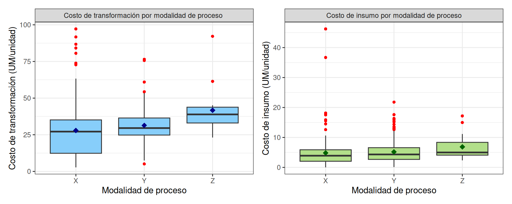
La modalidad Z corresponde a órdenes donde se aplican X y Y al mismo producto por requerimiento del cliente. Es una composición de procesos, no una alternativa. En transformación: se observa un gradiente claro X (27.91) < Y (31.4) < Z (41.62), confirmado por la mediana. Pero la dispersión cambia entre modalidades: X tiene desviación estándar de 17.9 (proceso volátil), Y tiene 10.51 (proceso controlado), Z tiene 17.33 pero con IQR contenido (alto y consistente).
En insumo: el patrón es más suave (X: 27.91, Y: 31.4, Z: 41.62), y la mediana de Z (38.89) está muy cerca de la de Y. El sobrecosto de Z proviene principalmente del componente de transformación, no del de insumos.
Lectura económica. Y es más estable y ligeramente más caro que X. X es más volátil. Z es estructuralmente más caro y tiene un comportamiento de costo distinto: el sobrecosto de Z no es la suma simple de X+Y, sino el producto de una interacción entre procesos. Esto sugiere que cuando el cliente solicita ambas modalidades sobre el mismo producto, hay ineficiencias de coordinación o setup adicionales que elevan el costo.
Limitación crítica. Cualquier conclusión cuantitativa sobre Z tiene intervalos de confianza muy amplios. Z aparece aquí como observación cualitativa, no como base para inferencia.
- Y es más estable y predecible; X es más volátil y barato en promedio.
- El sobrecosto de Z es estructural (en transformación) y refleja interacción entre procesos, no suma.
- Z tiene n=14: cualquier conclusión sobre esta modalidad debe tomarse con extrema cautela.
6.5.5 Análisis bivariado: tipo de equipo
| tipo_equipo | n | media | ds | 50% | mínimo | máximo | Q1 | Q3 | IQR |
|---|---|---|---|---|---|---|---|---|---|
| Transformación | |||||||||
| A1 | 287 | 33.03 | 12.71 | 30.38 | 5.09 | 92.17 | 25.31 | 38.34 | 13.03 |
| B2 | 45 | 29.90 | 11.20 | 28.90 | 12.03 | 75.69 | 22.26 | 33.15 | 10.88 |
| C3 | 8 | 64.36 | 19.16 | 58.78 | 39.67 | 97.18 | 51.83 | 75.60 | 23.77 |
| D4 | 55 | 8.82 | 3.54 | 8.46 | 2.77 | 21.99 | 6.03 | 10.86 | 4.83 |
| Insumo | |||||||||
| A1 | 287 | 5.17 | 3.90 | 4.30 | 0.11 | 36.71 | 2.77 | 6.41 | 3.64 |
| B2 | 45 | 4.99 | 3.26 | 4.51 | 0.55 | 15.23 | 3.18 | 5.67 | 2.49 |
| C3 | 8 | 11.26 | 6.10 | 11.41 | 2.40 | 18.17 | 7.31 | 16.36 | 9.05 |
| D4 | 55 | 3.58 | 6.36 | 1.64 | 0.01 | 46.22 | 1.13 | 4.23 | 3.10 |
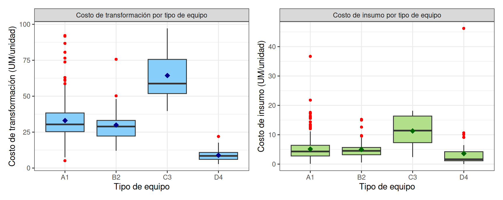
Esta es la tabla más reveladora del capítulo. Los cuatro tipos de equipo no operan en el mismo rango de costos: están en regímenes económicos completamente distintos. • A1 es el estándar operativo del sistema (n=287, ~33.03 UM/unidad, dispersión moderada). Su comportamiento típico está bien caracterizado. • B2 es operativamente similar a A1 (~29.9), ligeramente más barato y más estable. Pero su menor n (45) limita la robustez de la comparación. • C3 es claramente diferente: media de 64.36 UM/unidad, IQR amplio (23.77), dispersión alta. Es costoso y impredecible. Apenas 8 órdenes —insuficientes para conclusiones inferenciales sólidas, pero suficientes para señalar que requiere análisis special. • D4 es notablemente eficiente: media de 8.82 UM/unidad, dispersión reducida, comportamiento consistente. Representa una operación altamente eficiente. En insumos el patrón se mantiene: A1 y B2 son comparables (~33.03 UM/unidad), C3 más del doble (64.36), D4 el más bajo (8.82 con alta variabilidad por al menos un outlier extremo).
La pregunta inmediata. Si el sistema productivo tiene cuatro regímenes de costo tan distintos, ¿qué sentido tiene reportar un “costo promedio del sistema”? Cualquier promedio agregado describirá un valor que no representa adecuadamente a ninguno de los cuatro grupos. Esta es la primera grieta del marco analítico agregado.
- El sistema opera en cuatro regímenes de costo claramente diferenciados, no en uno solo.
- C3 está en un régimen de alto costo y alta variabilidad; D4 en uno de bajo costo y alta consistencia.
- Cualquier estadístico agregado es engañoso: el “promedio del sistema” no representa a ningún tipo de equipo individualmente.
6.5.6 Análisis bivariado: Equipo_id
| equipo_id | tipo_equipo | n | media | ds | 50% | minimo | maximo | Q1 | Q3 | IQR |
|---|---|---|---|---|---|---|---|---|---|---|
| M08 | A1 | 34 | 31.27639 | 9.319354 | 29.223054 | 12.938556 | 54.36551 | 24.629890 | 34.734748 | 10.104857 |
| M09 | A1 | 40 | 33.34972 | 15.921560 | 28.943841 | 7.458185 | 92.17387 | 24.663711 | 38.417845 | 13.754134 |
| M13 | A1 | 36 | 30.30618 | 9.351186 | 28.920109 | 14.168156 | 53.04372 | 23.778610 | 34.135578 | 10.356968 |
| M14 | A1 | 43 | 33.51819 | 11.898987 | 31.803886 | 18.285332 | 76.49633 | 24.591653 | 38.140008 | 13.548355 |
| M15 | A1 | 43 | 38.01583 | 11.775535 | 35.608155 | 8.470757 | 73.82103 | 30.007093 | 44.145193 | 14.138099 |
| M16 | A1 | 46 | 33.68989 | 15.958812 | 29.570643 | 5.093602 | 91.71969 | 25.502138 | 41.333351 | 15.831213 |
| M17 | A1 | 45 | 30.36666 | 11.049502 | 30.077145 | 8.756984 | 80.57443 | 24.208872 | 33.989632 | 9.780761 |
| M02 | B2 | 45 | 29.90398 | 11.200180 | 28.898809 | 12.025943 | 75.69041 | 22.263955 | 33.148368 | 10.884414 |
| M04 | C3 | 4 | 79.35268 | 14.636401 | 78.463097 | 63.299747 | 97.18480 | 70.383177 | 87.432605 | 17.049427 |
| M11 | C3 | 4 | 49.36509 | 6.567305 | 51.763046 | 39.674913 | 54.25934 | 48.642021 | 52.486113 | 3.844092 |
| M05 | D4 | 31 | 10.10229 | 3.754173 | 9.992373 | 4.682246 | 21.99044 | 7.603790 | 11.950964 | 4.347174 |
| M12 | D4 | 24 | 7.16331 | 2.442369 | 6.383549 | 2.766110 | 11.54071 | 5.354565 | 8.584072 | 3.229508 |
| equipo_id | tipo_equipo | n | media | ds | 50% | minimo | maximo | Q1 | Q3 | IQR |
|---|---|---|---|---|---|---|---|---|---|---|
| M08 | A1 | 34 | 5.665050 | 4.0368197 | 3.992955 | 0.1295180 | 15.886596 | 2.8173810 | 7.325198 | 4.5078168 |
| M09 | A1 | 40 | 5.509164 | 3.2870116 | 4.221224 | 1.1656617 | 17.180955 | 3.2953136 | 7.055640 | 3.7603260 |
| M13 | A1 | 36 | 3.913840 | 2.0886719 | 3.827828 | 0.1148000 | 7.777352 | 2.5527477 | 5.727522 | 3.1747739 |
| M14 | A1 | 43 | 5.435045 | 3.1086539 | 4.936789 | 0.2104667 | 17.516200 | 3.7962138 | 6.162844 | 2.3666304 |
| M15 | A1 | 43 | 5.506860 | 4.1066146 | 4.487847 | 0.1052334 | 21.803883 | 3.2820200 | 6.588681 | 3.3066613 |
| M16 | A1 | 46 | 5.238026 | 3.6697466 | 4.404447 | 0.2296000 | 17.602453 | 2.6865152 | 6.088540 | 3.4020245 |
| M17 | A1 | 45 | 4.823398 | 5.7074695 | 2.830810 | 0.8796594 | 36.705510 | 1.8922415 | 5.478526 | 3.5862843 |
| M02 | B2 | 45 | 4.993411 | 3.2595239 | 4.513479 | 0.5520079 | 15.226761 | 3.1846611 | 5.674693 | 2.4900316 |
| M04 | C3 | 4 | 13.836663 | 6.2070796 | 16.162889 | 4.8539876 | 18.166888 | 12.1122718 | 17.887280 | 5.7750083 |
| M11 | C3 | 4 | 8.674712 | 5.5309078 | 8.206842 | 2.4015355 | 15.883629 | 6.6932305 | 10.188323 | 3.4950925 |
| M05 | D4 | 31 | 5.277321 | 8.0884424 | 3.527777 | 0.5267213 | 46.218837 | 1.4020887 | 5.848744 | 4.4466553 |
| M12 | D4 | 24 | 1.392655 | 0.9503512 | 1.246863 | 0.0136519 | 3.608001 | 0.9263307 | 1.635555 | 0.7092244 |
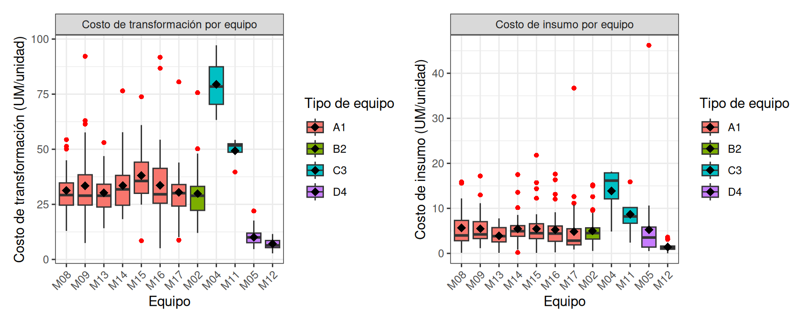
A1: una familia coherente. Los siete equipos A1 muestran medias de transformación entre 30 y 38 UM/unidad. La variabilidad dentro de cada equipo (IQR entre 10 y 16) es comparable. La variabilidad entre equipos es modesta. Los siete se comportan como una familia homogénea. M15 destaca ligeramente como el más caro del grupo, pero la diferencia respecto al más barato (M13) es de apenas 7-8 UM/unidad —irrelevante frente a los 50+ UM que separan a C3 de D4—. Operativamente, esto significa que la planificación puede asignar órdenes a cualquier equipo A1 con expectativas razonablemente predecibles.
B2: un solo equipo. M02 es el único equipo B2. Su perfil (29.9, 4.99) es indistinguible visualmente del cluster A1. Esto plantea una pregunta operativa relevante: si B2 opera con costos similares a los A1, ¿qué justifica mantenerlas como categorías separadas? La respuesta puede ser técnica (diferencias de fabricante, año o capacidad que no se traducen en costo unitario) u organizacional (clasificación heredada que ya no refleja diferencias económicas).
C3: dos equipos heterogéneos entre sí. Aquí es donde la subdivisión por equipo individual cambia más radicalmente la lectura. M04 promedia 79 UM/unidad; M11 promedia 49 UM/unidad. La diferencia entre estos dos equipos del mismo tipo (30 UM/unidad) es mayor que la diferencia entre los tipos A1 y D4 (que es de unas 25 UM). Tratarlos como un grupo “C3” da un promedio (64.4) que no representa a ninguno de los dos. Adicionalmente, M11 tiene IQR estrecho (3.8) mientras M04 tiene IQR amplio (17.0): M04 no solo es más caro, también es menos predecible. La decisión metodológica que sigue (excluir C3 del análisis estratificado) queda doblemente justificada: por bajo n y por heterogeneidad interna.
D4: dos equipos eficientes pero distintos. M05 promedia 10.1, M12 promedia 7.2. La diferencia absoluta (3 UM/unidad) parece pequeña pero representa un 40% de variación relativa. En insumos la diferencia es aún más marcada (5.3 vs 1.4). Sin embargo, M05 muestra un máximo de 46.2 con desviación estándar de 8.1, lo que indica al menos un outlier extremo que distorsiona su media. La pregunta operativa relevante: ¿qué hace que M12 sea más eficiente que M05? Si es estructural (productos asignados más simples), es composición. Si es técnico (mejor mantenimiento, mejor operario), es una oportunidad de mejora replicable.
- A1 es una familia coherente; los siete equipos pueden tratarse analíticamente como un grupo.
- C3 esconde dos equipos muy diferentes (M04 y M11): el promedio del tipo no representa a ninguno.
- M02 (B2) es indistinguible de A1 en costo: vale la pena revisar si la clasificación tecnológica B2 sigue siendo analíticamente útil.
6.6 Señales de heterogeneidad estructural
### Las distribuciones condicionales no son uniformes
Las secciones anteriores acumularon evidencia de que el sistema productivo no es homogéneo. Esta sección cierra el diagnóstico con dos análisis que formalizan la heterogeneidad y la convierten en una restricción metodológica concreta.
| tipo_equipo | costo_transformacion_medio | costo_insumo_medio |
|---|---|---|
| A1 | 33.0 | 5.2 |
| B2 | 29.9 | 5.0 |
| C3 | 64.4 | 11.3 |
| D4 | 8.8 | 3.6 |
Esta tabla resume lo que ya sabíamos pero ahora con propósito metodológico explícito: las distribuciones de costo dependen radicalmente del subgrupo donde se mira. C3 y D4 difieren en un factor de 7×. La pregunta natural es si esos cuatro grupos son siquiera comparables entre sí, o si están operando en universos económicos distintos por restricciones del propio proceso.
6.6.1 Tabulación cruzada tipo_equipo × modalidad × num_insumos
Las diferencias son tan marcadas que invitan a preguntar: ¿cada tipo de equipo es realmente comparable con los otros? La tabla cruzada de las tres dimensiones operativas principales (tipo_equipo × modalidad_proceso × num_insumos) revela la estructura subyacente del sistema:
| tipo_equipo | modalidad_proceso | num_insumos | n |
|---|---|---|---|
| A1 | X | 1 | 60 |
| A1 | X | 2 | 63 |
| A1 | Y | 1 | 118 |
| A1 | Y | 2 | 33 |
| A1 | Z | 1 | 5 |
| A1 | Z | 2 | 8 |
| B2 | X | 1 | 7 |
| B2 | X | 2 | 13 |
| B2 | Y | 1 | 18 |
| B2 | Y | 2 | 6 |
| B2 | Z | 1 | 1 |
| B2 | Z | 2 | 0 |
| C3 | X | 1 | 7 |
| C3 | X | 2 | 1 |
| C3 | Y | 1 | 0 |
| C3 | Y | 2 | 0 |
| C3 | Z | 1 | 0 |
| C3 | Z | 2 | 0 |
| D4 | X | 1 | 55 |
| D4 | X | 2 | 0 |
| D4 | Y | 1 | 0 |
| D4 | Y | 2 | 0 |
| D4 | Z | 1 | 0 |
| D4 | Z | 2 | 0 |
El descubrimiento. El espacio operativo no es un cubo completo. De 24 combinaciones posibles, 11 están vacías o tienen una sola observación. D4 solo opera en (X, 1). C3 solo opera en X. Modalidad Z prácticamente no existe fuera de A1. Esto no es una característica del muestreo, sino del proceso real: hay restricciones técnicas y operativas que determinan qué combinaciones son factibles y cuáles no.
Lo que parecía un dataset plano con variables categóricas independientes es en realidad un sistema con dependencias operativas: • El tipo de equipo determina qué modalidades de proceso son técnicamente factibles. • El tipo de equipo determina qué configuraciones de insumos son posibles. • Modalidad y número de insumos están condicionados por el equipo donde se ejecuta la orden.
- El espacio operativo está truncado: 11 de 24 combinaciones posibles son inexistentes o casi vacías.
- Las variables categóricas no son independientes; existen dependencias operativas que reflejan restricciones técnicas reales.
- El dataset no es una muestra aleatoria de un universo uniforme; refleja la estructura del proceso productivo real.
6.7 Implicaciones metodológicas del descubrimiento
6.7.1 Por qué el análisis marginal puede ser engañoso (confounding)
Cuando las categorías no son independientes, comparar costos marginalmente es estadísticamente engañoso. El ejemplo más claro lo da D4: D4 tiene costo medio de 8.8 UM/unidad. A1 tiene costo medio de 33.0 UM/unidad. Conclusión aparente: D4 es 4× más eficiente que A1. Esta conclusión es defectuosa. D4 solo opera en la combinación (X, 1) —la configuración operativa más simple del sistema—. A1, en cambio, opera en seis combinaciones distintas, incluyendo las más complejas. La comparación está mezclando dos efectos:
• El efecto del equipo (A1 vs D4). • El efecto de la configuración operativa (combinaciones simples vs todo el espectro).
Sin separarlos, no sabemos si D4 es realmente más eficiente como tecnología, o si simplemente se le asignan las órdenes más fáciles. Este tipo de error tiene un nombre técnico: confusión (confounding). Es una de las trampas clásicas de los análisis agregados sobre datasets con dependencias entre variables.
Este descubrimiento implica que cualquier reporte que compare equipos por costo promedio sin condicionar por modalidad e insumos está produciendo conclusiones potencialmente incorrectas. Una decisión como “migrar producción al equipo D4 porque es más barato” puede ser un error técnico si D4 simplemente no puede ejecutar las órdenes complejas que actualmente se asignan a A1.
A partir de este punto, el análisis abandona la lógica de “promedio por categoría” y adopta una lógica condicional: cada efecto se evalúa dentro del contexto operativo donde sí hay comparabilidad real.
6.7.2 Decisiones de exclusión justificadas
Tras el diagnóstico anterior, se adoptan dos exclusiones explícitas que guían el análisis estratificado del Capítulo 7:
Exclusión 1: modalidad Z. Las 14 órdenes en Z corresponden a configuraciones excepcionales donde se aplican las modalidades X y Y al mismo producto por solicitud del cliente. Tres razones para excluirlas: • Conceptual: Z es una composición de procesos, no una modalidad alternativa comparable a X o Y. • Estadística: n=14 distribuidas en tres celdas no permite inferencia con potencia razonable. • Operativa: las características de Z (sobrecosto sistemático, baja frecuencia, dependencia de pedido específico) la hacen un caso especial que merece análisis separado, no comparación directa. Las órdenes Z se documentan brevemente como referencia descriptiva al final del Capítulo 7, sin pretensión inferencial.
Exclusión 2: tipo de equipo C3. Las 8 órdenes de C3 (M04: 4, M11: 4) presentan dos problemas simultáneos: • Bajo n: intervalos de confianza tan amplios que cualquier comparación es ruido. • Heterogeneidad interna: M04 y M11 son tan diferentes entre sí (medias 79 vs 49) que tratarlos como grupo no tiene sentido. C3 se excluye del análisis estratificado y se reporta descriptivamente al final con advertencia explícita sobre su no comparabilidad.
Tras estas exclusiones, el dataset principal queda con 373 órdenes (395 - 14 órdenes Z - 8 órdenes C3). Sobre este subconjunto se desarrolla el análisis estratificado del Capítulo 7. El dataset depurado completo (395 órdenes) se conserva como referencia y para los reportes descriptivos de los grupos excluidos.
- Las comparaciones marginales producen conclusiones engañosas cuando las categorías son dependientes (confounding).
- Modalidad Z y tipo C3 se excluyen del análisis estratificado por bajo n y por no-comparabilidad estructural.
- El dataset principal queda con 373 órdenes; los grupos excluidos se documentan descriptivamente al final del Capítulo 7.
6.8 Cierre: qué sabemos, qué no sabemos, qué sigue
Qué sabemos al cerrar este capítulo.
El sistema productivo tiene una estructura económica más compleja de la que sugiere cualquier análisis agregado. Cuatro hallazgos principales:
El costo total está dominado por la transformación (85.6%), no por los insumos. Cualquier programa de eficiencia debe priorizar el componente de proceso.
El sistema opera en al menos cuatro regímenes de costo distintos según tipo de equipo: estándar (A1, B2), alto-inestable (M04), alto-estable (M11), eficiente (D4). Las recomendaciones genéricas no aplican.
Las variables operativas (volumen, duración) están más fuertemente acopladas que las variables económicas (costos), sugiriendo que la heterogeneidad de costo proviene principalmente de cómo y cuánto se produce, no de qué materiales se usan.
El espacio operativo está truncado: el dataset refleja restricciones técnicas reales, no una muestra aleatoria. Esto invalida el análisis marginal y exige análisis estratificado.
Qué no sabemos.
• Si las diferencias entre equipos del mismo tipo (M15 vs M13 en A1; M04 vs M11 en C3; M05 vs M12 en D4) son estructurales (asignación diferenciada de productos) o técnicas (eficiencia real del equipo). Sin estratificar por categoría de producto, no se puede separar.
• Si los equipos eficientes (D4) lo son por la tecnología o por la simplicidad de las configuraciones que ejecutan. La pregunta solo se puede responder con datos que actualmente no existen (D4 nunca ha operado en otras configuraciones).
• Cuál es el efecto real del número de insumos sobre el costo cuando se controla por equipo y modalidad. La comparación marginal sugiere que dos insumos elevan el costo, pero no se sabe si esto se mantiene dentro de cada estrato.
• Si la modalidad Y es genuinamente más estable que X, o si esa estabilidad refleja la composición particular de equipos y productos asignados a cada modalidad.
Qué sigue.
El Capítulo 7 retoma estas preguntas con análisis estratificado sobre el dataset principal (373 órdenes, sin Z y sin C3). La estructura del análisis estará organizada alrededor de las comparaciones que el diseño truncado del dataset sí permite hacer:
• Efecto puro del tipo de equipo dentro del único estrato donde A1, B2 y D4 coexisten: la combinación (X, 1).
• Efecto de modalidad y número de insumos dentro de A1, el único equipo con cobertura completa de las cuatro combinaciones (X/Y × 1/2 insumos).
• Heterogeneidad intra-tipo y comparación de regímenes operativos a nivel de equipo individual.
• Correlaciones condicionales dentro de A1 para verificar si las economías de escala observadas en el agregado se mantienen al controlar por equipo y modalidad.
El Capítulo 8 formaliza las hipótesis derivadas en pruebas inferenciales con cálculo de tamaños de efecto. Las exclusiones documentadas en este capítulo restringen el alcance pero protegen la validez del análisis posterior.